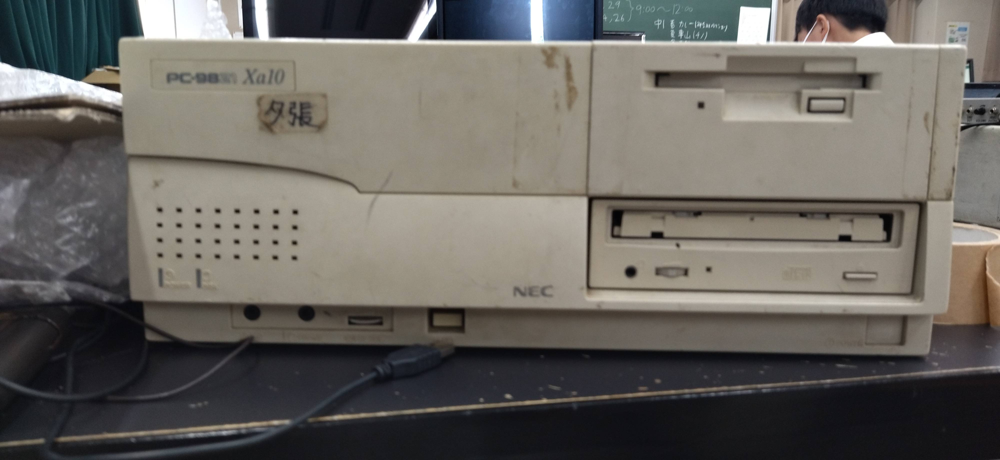
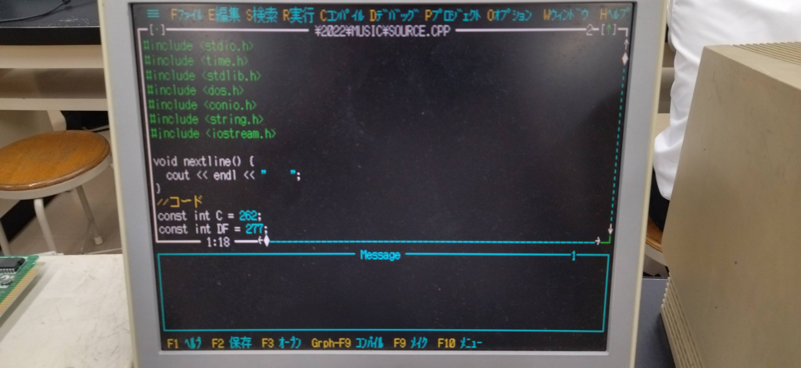
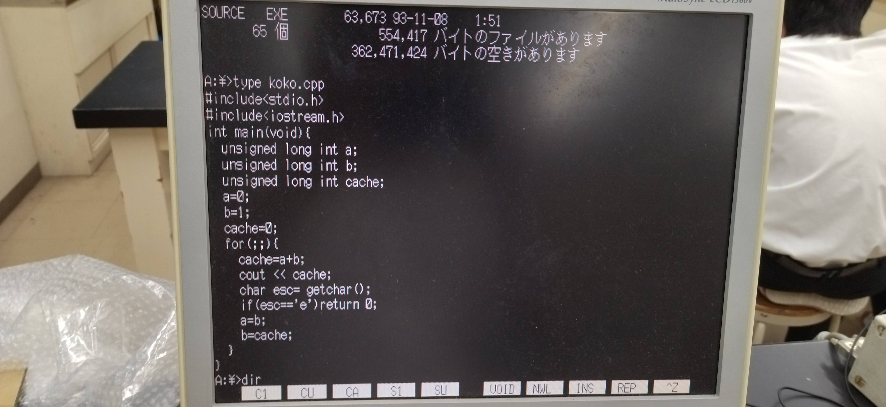
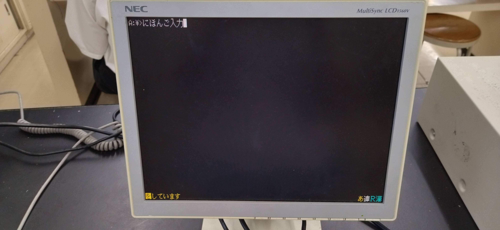

はじめに
皆さんこんにちは高2のN.Kです。今回はPC98で曲を演奏するという内容なのですがこの記事を書こうと思った理由の中に後輩へ技術を継承するということがあります。というのもPC98を扱える部員が私の4個上の代で途絶えており、私がこの企画をやるのに苦労したからです。もしかしたら後輩がPC98を扱うかもしれないのでしっかりと文章で書いておこうと思います。(いつまで部にあるPC98がもつのかわかりませんが…)
PC98とは
物理部の文化祭に来てくださるのは小学生が多いので一応軽くPC98の説明をしておきます。 PC98とはNECが1982年から2003年まで製造・販売を行っていたパソコンのシリーズである「PC-9800」の略称です。 今回使っていくのは1995年発売のPC9821Xa10という機種で本体標準価格税別268000円だそうです。当時のPCの高価さがうかがえます。

PC98でのプログラミング
今回はC言語というプログラミング言語を、統合開発環境はTurboC++4.0を使っていきます。 統合開発環境とはテキストエディタやプログラミング言語を機械語に変換するコンパイラなどの機能を含むソフトウェア開発のための統合的なプログラミング環境のことでTurboC++は1987年にボーランド社から発売されたTurboCの後継である統合開発環境で今回使うver4.0は1995年に発売されました。

PC98での操作
PC98のOSはMicrosoftが開発したMS-DOSとなっており、基本的にはCUIと呼ばれる文字列でコンピュータに指示を与えてディスプレイに文字を表示して応答するUIとなっています。 基本操作はWindowsのコマンドプロンプトと変わらないのでそこまで難しくないです。 物理部のPC98にはFILMTNというフリーのファイルマネージャが入っているので案外コマンドを入力しなくても何とかなります。

日本語入力
日本語入力にはATOKというIMEを使います。入力中にXFER+CTRLを押すことで日本語入力になります。F7でカタカナなど後の操作は基本的に今と変わりません。

実際にコードを書く
IDEを起動してコードを書いていきます。ここから先はソースコードの一部を公開して、解説していこうと思います。
ビープ音の高さは周波数で指定するので周波数と音階を対応させています。
長さはミリ秒で指定するので同様にミリ秒と音符の長さを対応させています。
//音階
const int A = 440;
const int AF = 415;
const int AS = BF;
const int B = 494;
const int BF = 466;
const int C = 262;
const int CS = DF;
const int D = 294;
const int DF = 277;
const int DS = EF;
const int E = 330;
const int EF = 311;
const int F = 349;
const int FS = GF;
const int G = 392;
const int GF = 370;
const int GS = AF;
//音符
const int eight = sixteen*2;
const int four = eight*2;
const int one = two*2;
const int sixteen = 125;
const int two = four*2;その次は音声再生用の関数を作ります。playmsg(音符,歌詞,音階,音程)で歌詞つきで音符を再生します。play()はそれの歌詞なし版です。
void playmsg(int ms, const char *msg, int code, int ontei = 2) {
cout << msg;
sound(code * ontei);
delay(ms);
nosound();
}
void play(int ms, int code, int ontei = 2) {
playmsg(ms, "", code, ontei);
}あとはひたすらこれを使って音を鳴らしていくだけです。
!(kbhit()&&getch() == 'q')の部分でもしQが押されたら終了するようにしています。
kbhit()は何かキーが押されたら0以外の数値を返しバッファにキー情報が入ります。それをgetch()で受け取ってそのキーがqであったらループを抜けるようにしています。
int main() {
while(!(kbhit()&&getch() == 'q')){
system("cls");
cout << endl <<
" ミックスナッツを再生中..." << endl;
delay(500);
nextline();
goto start;
start:
playmsg(eight,"袋",BF);
play(eight,BF);
play(eight,BF);
playmsg(eight,"に",BF);
playmsg(eight,"詰",B);
playmsg(eight,"め",DF,4);
playmsg(eight,"ら",EF,4);
playmsg(eight,"れ",DF,4);
delay(eight);
playmsg(four,"た",AF,2);おわりに
文化祭で展示した作品を軽く解説してみました。もう一つPC98の部誌を書いているのでそちらも見ていただけるとありがたいです。今後PC98を後輩が引き継いでくれるのかどうかわかりませんが引き継いでくれたらうれしいですね。ここまで読んでくださりありがとうございました。